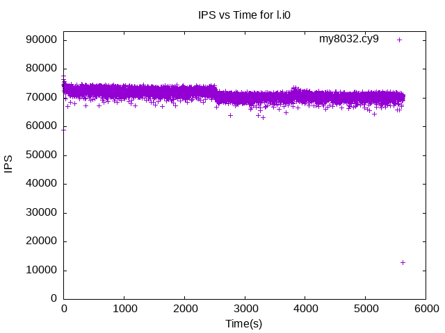
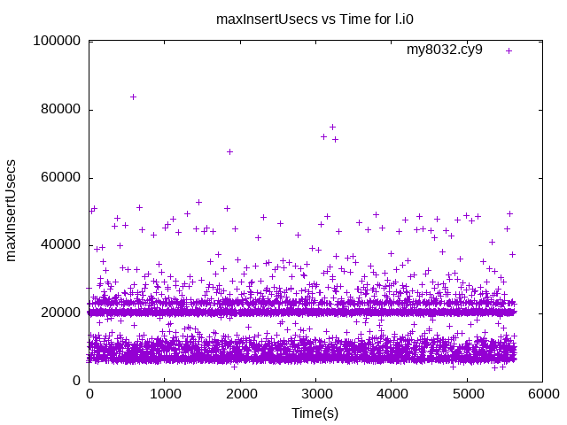
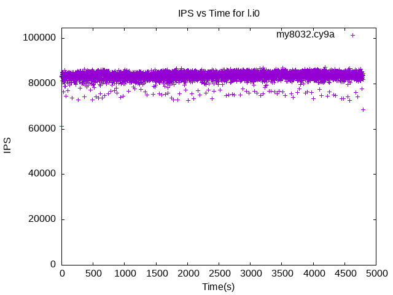
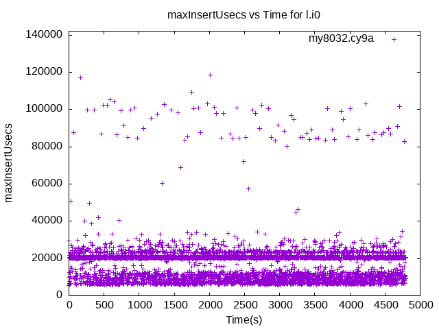
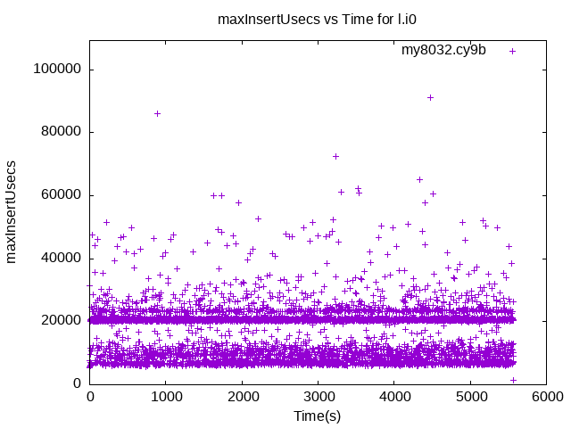

These have results per 1-second interval for: insert rate (IPS) and max insert reponse time.
The results are from 1 client while the test may have N clients where N > 1.
Contents
my8032.cy9: IPS
my8032.cy9
my8032.cy9: max insert response time
my8032.cy9
my8032.cy9a: IPS
my8032.cy9a
my8032.cy9a: max insert response time
my8032.cy9a
my8032.cy9b: IPS
my8032.cy9b
my8032.cy9b: max insert response time
my8032.cy9b